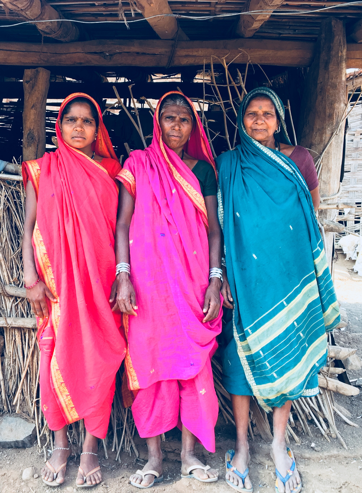
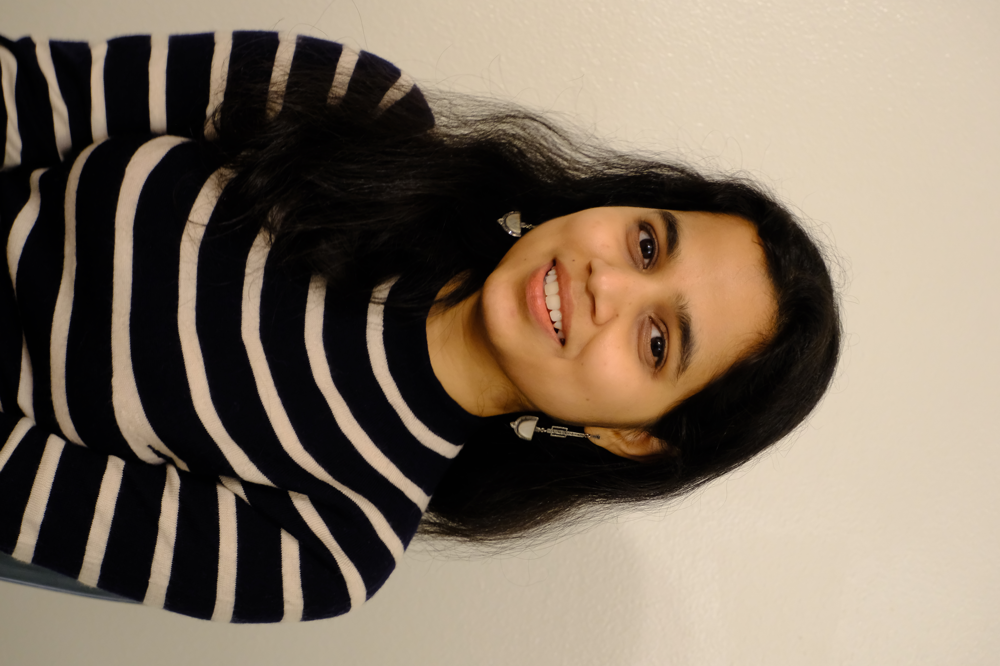

Malvya Chintakindi
Visiting Assistant Professor, Department of Anthropology, Western Washington University

Malvya Chintakindi
Visiting Assistant Professor, Department of Anthropology Western Washington University
Hi! I am Malvya, a Visiting Assistant Professor in the Department of Anthropology at Western Washington University. I completed my PhD in Anthropology at the University of Oregon (UO) in July 2026. I am from Hyderabad, a metropolitan city and a major IT and biotechnology hub in Southern India, Telangana state, India.
My research focuses on how marginalized women navigate aspirations for a “good life” within the constraints of caste, class and informal labor in Hyderabad's urban settlements. This research was supported by the Center for the study of women in Society, UO, where I was a Jane Grant Dissertation Fellow for 2025-26. This research has also been generously funded by the Division of Global Engagement, Global Studies Institute, Asian Studies Department and the Oregon Humanities Center at UO. I am passionate about global south collaborations, feminist and community based participatory research, program evaluation, and translating theory and research findings into real life applications.
Prior to embarking on my doctoral journey, I was an international development practitioner for five years, working with grassroots research/implementation firms, international donor organizations and governments across India and Africa. I hold a background in public policy, development studies and journalism.
News
Sep 2026 Joined the Department of Anthropology at Western Washington University as a Visiting Assistant Professor.
Jul 2026 Completed my PhD in Anthropology at the University of Oregon.
2026 Book chapter — “Dalit Intersectionality as Method and Theory: Women’s Narratives from the Margins of Urban Progress,” forthcoming in Intersectionality beyond Eurocentrism.
2025 “Ethnography in Crisis — Fieldwork, Care, and Survival in Tumultuous Times” published in the Journal for the Anthropology of North America.
2025–26 Jane Grant Dissertation Fellow at the Center for the Study of Women in Society, University of Oregon.